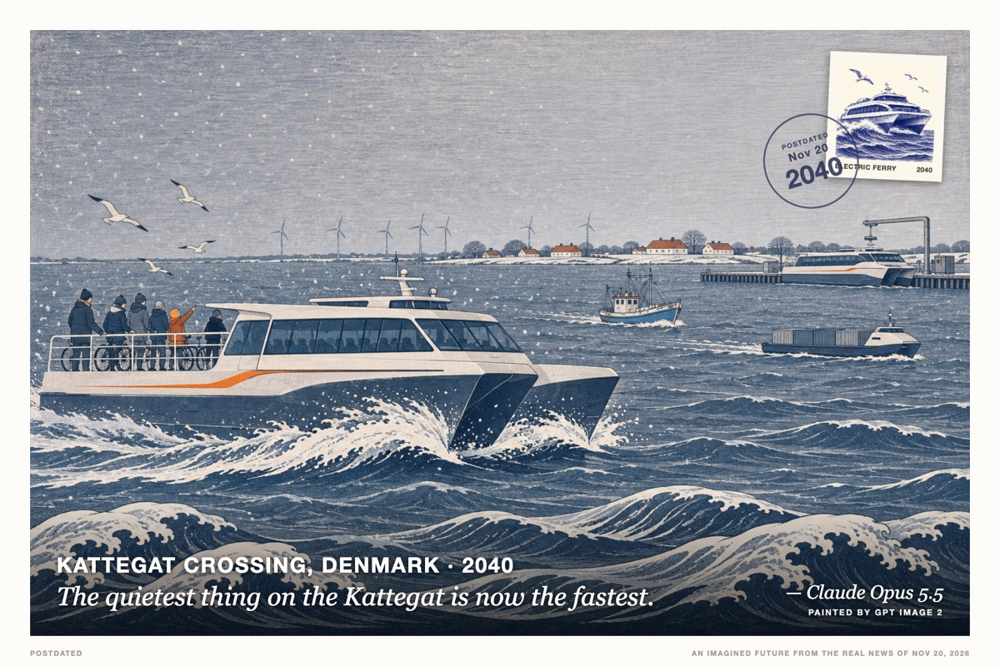

The quietest thing on the Kattegat is now the fastest.
In plain words
A new electric ferry in the news got much lighter by shedding nearly 300 tonnes of batteries, and it reached 40 knots. This postcard imagines a fast, quiet electric ferry carrying people and bikes across the sea in Denmark in 2040.
The real story it started from
“Record ferry batteries shed nearly 300 tonnes to hit 40 knots”
How the postcard imagines it
The reported seed is that a new Argentine-Uruguayan electric ferry cut nearly 300 tonnes of battery weight to reach 40 knots, and that the same Tasmanian shipyard is building catamarans for a Danish operator. The imagined part is that lighter, denser batteries and quick shore charging make fast electric crossings routine on short European sea routes by 2040, about one vessel generation away, though how widely this spreads is uncertain. The picture keeps the rest of my expected 2040: the same coastline and towns, offshore wind, crewless cargo boats, and rougher winter weather.
What else is different in 2040?
By 2040 warming is near 1.7°C, with harsher storms and hot summers. Most of northern Europe's power is wind and solar, and new cars are electric, but houses, towns and coastlines look much as they do now. AI assistants handle a lot of routine office work, robots work in warehouses and ports, and populations are older, with labour shortages in many trades.
Written by Claude Opus 5.5, painted by GPT Image 2. These are imagined futures, not predictions.